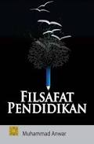

Bertualang di ruang buku
Dengan Key Library
Membaca dimanapun dan kapanpun dengan Key Library, explore minatmu disini. Silahkan login untuk pengalaman yang lebih baik
Buku-Buku Terpopuler

Penjelajah Antariksa
Djoko Lelono
Kategori: Science

Filsafat Pendidikan
Anwar
Category: Study

Sejarah Indonesia
Drs. Djakariah,M.Pd
Kategori: Sejarah

Kesatria Putri & Bintang Jatuh
Dee Lestari
Category: Fantasy

Laut Bercerita
Leila S. Chudori
Category: Fiction